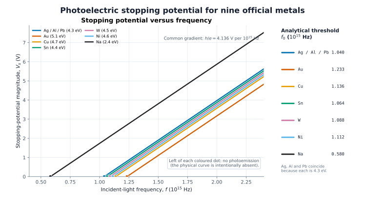
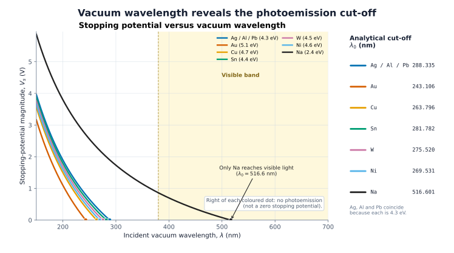
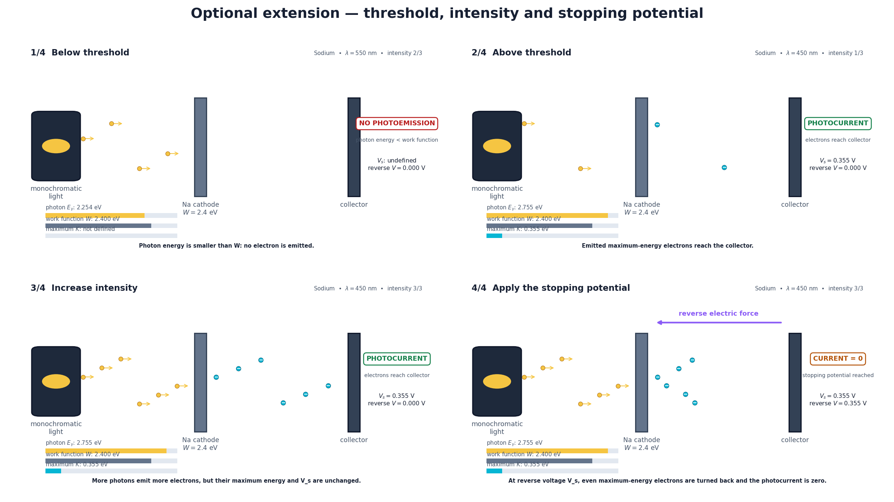

eVs = Kmax = hf − W
Vs is physically defined only when photoemission occurs.Einstein’s photoelectric equation
The threshold
decides
everything.
Light can be bright and still fail. A single photon must first pay
the metal’s work-function toll.
Live threshold chamber
Loading official metals
Checking evidence
Reading validated Task 4 evidence
The validated Task 4 evidence could not be loaded.
- Photon energy
- —
- Work function
- —
- Maximum K.E.
- —
- Stopping potential
- —
Frequency / threshold
—
One photon, one electron
Energy is counted before motion begins.
The work function is the admission cost. Only the photon energy left over can become maximum electron kinetic energy.Vs = h e f − W e
f0 = W h
λ0 = hc W
f < f0
No photoemission
A negative straight-line value is a mathematical extrapolation, not a physical stopping potential.
f = f0
Kmax = 0
The most energetic emitted electron has just zero speed.
f > f0
Photoemission
Every extra photon-energy increment raises Kmax.
The required comparison
Nine metals. One universal gradient.
All frequency curves share h/e. The work function shifts the threshold—and Ag, Al and Pb overlap exactly because the supplied table gives each the same 4.3 eV value.Preparing validated comparison
The validated comparison data could not be loaded.
Physical curves begin at each threshold frequency. Below threshold, stopping potential is undefined.
- Selected metal
- —
- f0
- —
- λ0
- —
Accepted numerical evidence
The threshold is not just drawn. It is checked.
Deterministic arrays, 43 independent checks, Decimal references, analytical cut-offs, energy identities, and failure-injection tests all sit behind the displayed result.
Independent checks
—
Loading validation report
Official metals
—
One immutable source table
Frequency gradient
—
Common h/e for every metal
Exact overlap
Ag · Al · Pb
Shared W = 4.3 eV


Evidence verification pending The page remains unlocked until all committed evidence agrees.
Official optional extension
A schematic chamber, kept honest.
The animation communicates threshold, intensity, and stopping potential. Its particle counts and trajectories are illustrative; every energy state still comes from the validated model.
Validated extension
60 frames · 1920 × 1080 · deterministic loop
Four scenes: below threshold, above threshold, intensity change, and current suppression at the stopping potential.
Included
One-photon energy transfer, ideal uniform work functions, maximum electron kinetic energy, and reverse stopping potential.
Not claimed
Microscopic trajectories, a complete I–V characteristic, surface chemistry, temperature effects, or experimental fitting.